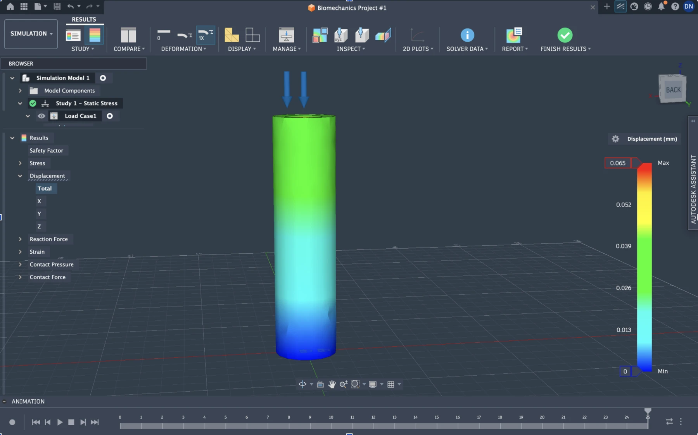
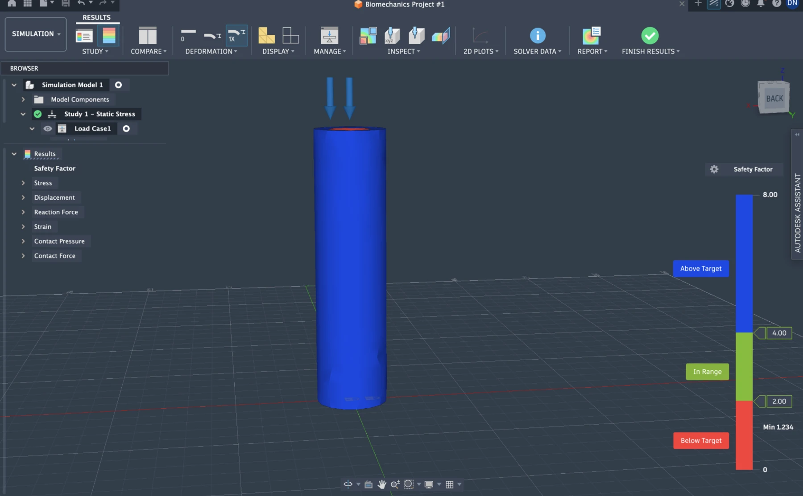

Two materials, one simplified shaft.
I built a composite cylindrical model to investigate femoral-shaft behavior under axial compression. A cortical shell surrounds a trabecular core. I derived material properties from the provided experimental stress–strain data and completed the model, calculations, simulation, and report individually.
The 120 mm model used a 30 mm outer diameter and an 18 mm core. I fixed the base and applied a 2,500 N axial load in Fusion.
What the simulation showed.
| Maximum von Mises stress | 7.704 MPa |
|---|---|
| Maximum total displacement | 0.065 mm |
| Minimum safety factor | 1.234 |
The plots show stress, displacement, and the local safety factor for this geometry and loading condition. They are outputs of the simplified model, not a general prediction for a human femur.





The assumptions are part of the result.
The model assumes isotropic, linear-elastic materials and represents the femur as a straight cylinder. It excludes the curvature, variable wall thickness, bending, and torsion of a real femur.
The material data also represent a 50th-percentile adult male. My report discusses why that is a poor stand-in for every patient, particularly people with osteoporosis, and identifies lower-stiffness material cases for future analysis.
For a surgical-training surrogate, I considered a glass-fiber-reinforced polymer shell and a low-density polyurethane foam core as possible material substitutes.
Read my original report